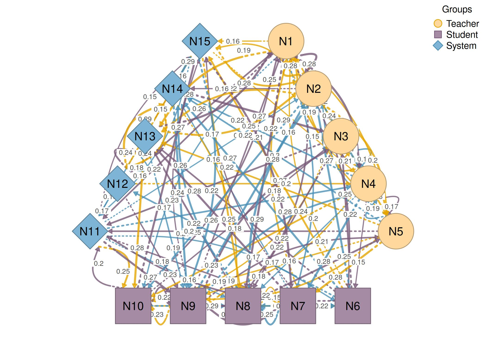
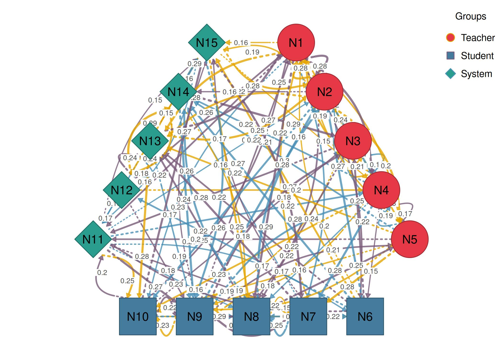
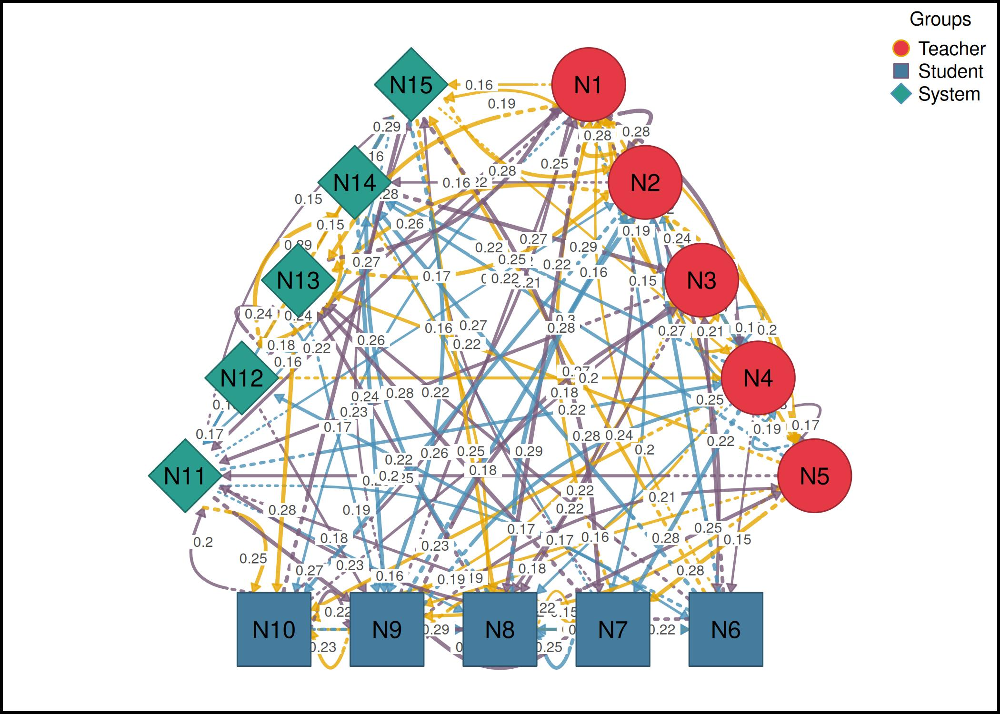
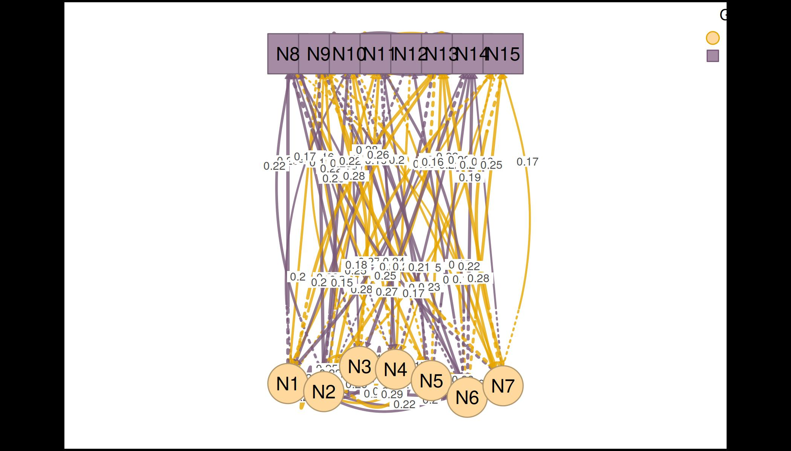
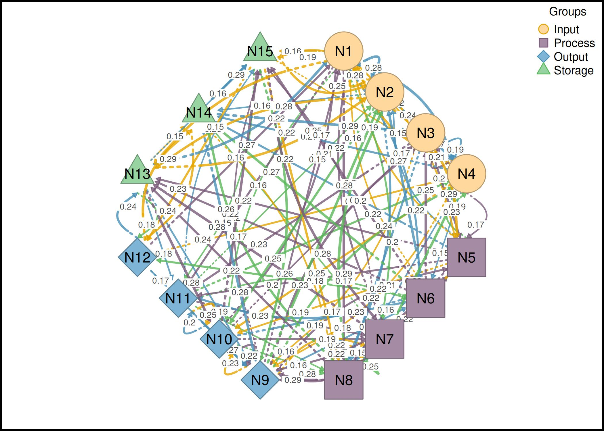
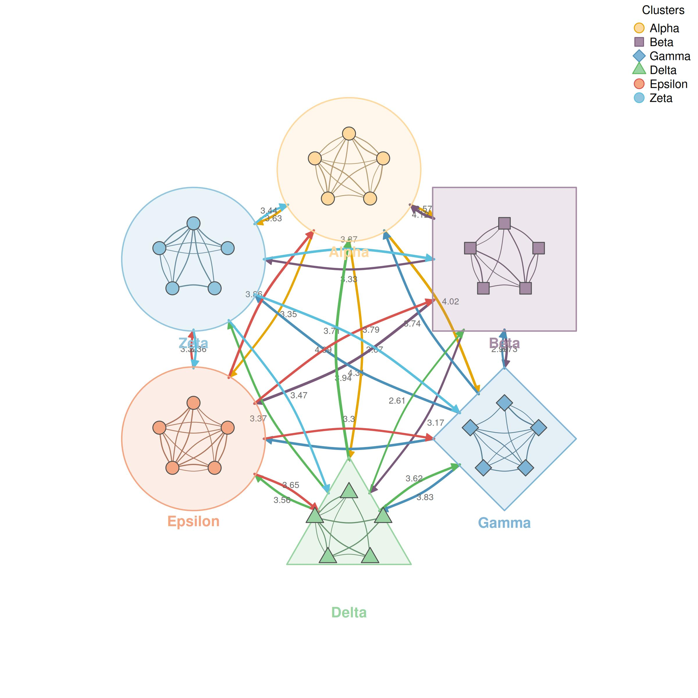
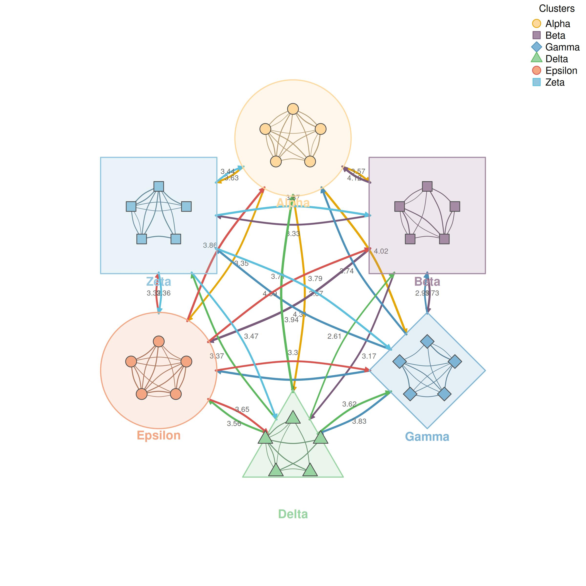
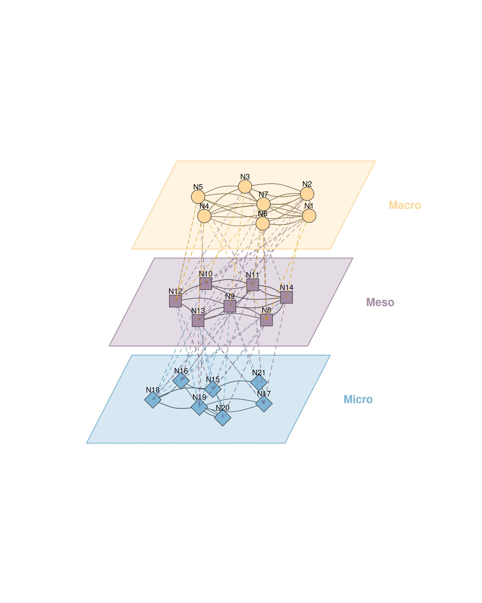

Multi-Group, Multi-Cluster, and Multilevel Networks
Source:vignettes/multi_network.Rmd
multi_network.Rmdcograph provides three functions for visualizing
networks with grouped structure: plot_htna() for
multi-group layouts, plot_mtna() for multi-cluster layouts
with summary edges, and plot_mlna() for multilevel networks
rendered in 3D perspective. All three accept a weight matrix and a list
defining how nodes are assigned to groups, clusters, or layers.
plot_htna: Multi-Group Networks
plot_htna() arranges groups of nodes into geometric
patterns. For two groups it produces a bipartite layout; for three or
more it arranges groups along the edges of a polygon or along arcs of a
circle.
Example 1: Polygon layout
With three groups, the default layout places each group along one edge of a triangle.
par(mar = c(0, 0, 0, 0))
plot_htna(m, groups, layout = "polygon", minimum = 0.15, esize = 3)
#> Warning: 'esize' is deprecated, use 'edge_size' instead.
Example 2: Circular layout
The circular layout places groups along arcs of a circle instead of polygon edges.
par(mar = c(0, 0, 0, 0))
plot_htna(m, groups, layout = "circular", minimum = 0.15, esize = 3)
#> Warning: 'esize' is deprecated, use 'edge_size' instead.
Example 3: Custom colors and shapes
par(mar = c(0, 0, 0, 0))
plot_htna(m, groups, layout = "polygon", minimum = 0.15, esize = 3,
group_colors = c("#E63946", "#457B9D", "#2A9D8F"),
group_shapes = c("circle", "square", "diamond"))
#> Warning: 'esize' is deprecated, use 'edge_size' instead.
Example 4: Two-group bipartite
With two groups, plot_htna() produces a bipartite layout
by default. Jitter spreads nodes horizontally based on their cross-group
connectivity.
two_groups <- list(
Teacher = paste0("N", 1:7),
Student = paste0("N", 8:15)
)
par(mar = c(0, 0, 0, 0))
plot_htna(m, two_groups, minimum = 0.15, esize = 3)
#> Warning: 'esize' is deprecated, use 'edge_size' instead.
Example 5: Horizontal bipartite
par(mar = c(0, 0, 0, 0))
plot_htna(m, two_groups, minimum = 0.15, esize = 3,
orientation = "horizontal")
#> Warning: 'esize' is deprecated, use 'edge_size' instead.
Example 6: Four groups
With four groups the polygon layout produces a rectangle.
four_groups <- list(
Input = paste0("N", 1:4),
Process = paste0("N", 5:8),
Output = paste0("N", 9:12),
Storage = paste0("N", 13:15)
)
par(mar = c(0, 0, 0, 0))
plot_htna(m, four_groups, layout = "polygon", minimum = 0.15, esize = 3)
#> Warning: 'esize' is deprecated, use 'edge_size' instead.
plot_mtna: Multi-Cluster Networks
plot_mtna() places each cluster inside a bordered shape
and draws aggregated summary edges between clusters. Individual
within-cluster edges are shown inside each shape. The alias
mtna() is available as shorthand.
Example 7: Default cluster layout
set.seed(42)
nodes30 <- paste0("N", 1:30)
m30 <- matrix(runif(900, 0, 0.3), 30, 30)
diag(m30) <- 0
colnames(m30) <- rownames(m30) <- nodes30
clusters <- list(
Alpha = paste0("N", 1:5),
Beta = paste0("N", 6:10),
Gamma = paste0("N", 11:15),
Delta = paste0("N", 16:20),
Epsilon = paste0("N", 21:25),
Zeta = paste0("N", 26:30)
)
par(mar = c(0, 0, 0, 0))
plot_mtna(m30, clusters, minimum = 0.1)
Example 8: Custom shapes and spacing
par(mar = c(0, 0, 0, 0))
plot_mtna(m30, clusters, minimum = 0.1,
shapes = c("circle", "square", "diamond",
"triangle", "circle", "square"),
spacing = 4,
shape_size = 1.5)

plot_mlna: Multilevel Networks
plot_mlna() renders layers stacked in 3D perspective.
Within-layer edges are drawn as solid lines and between-layer edges as
dashed lines connecting adjacent layers. The alias mlna()
is available as shorthand.
Example 11: Default multilevel
set.seed(42)
nodes21 <- paste0("N", 1:21)
m21 <- matrix(runif(441, 0, 0.3), 21, 21)
diag(m21) <- 0
colnames(m21) <- rownames(m21) <- nodes21
layers <- list(
Macro = paste0("N", 1:7),
Meso = paste0("N", 8:14),
Micro = paste0("N", 15:21)
)
par(mar = c(0, 0, 0, 0))
plot_mlna(m21, layers, minimum = 0.2, legend = FALSE)
Parameter reference
plot_htna
| Parameter | Description | Default |
|---|---|---|
x |
Weight matrix or tna object | Required |
node_list |
List of character vectors defining groups | Required |
layout |
"auto", "bipartite",
"polygon", "circular"
|
"auto" |
orientation |
"vertical" or "horizontal" (bipartite
only) |
"vertical" |
jitter |
Controls horizontal spread of nodes | TRUE |
jitter_amount |
Base jitter amount (0-1) | 0.8 |
curvature |
Edge curvature | 0.4 |
group_colors |
Color per group | Auto |
group_shapes |
Shape per group | Auto |
minimum |
Min weight to display | 0 |
legend |
Show legend | TRUE |
plot_mtna
| Parameter | Description | Default |
|---|---|---|
x |
Weight matrix or tna object | Required |
cluster_list |
List of character vectors defining clusters | Required |
layout |
"circle", "grid",
"horizontal", "vertical"
|
"circle" |
spacing |
Distance between cluster centers | 3 |
shape_size |
Cluster shell size | 1.2 |
node_spacing |
Node placement within shapes (0-1) | 0.5 |
shapes |
Shape per cluster | Auto |
colors |
Color per cluster | Auto |
summary_edges |
Show aggregated between-cluster edges | TRUE |
within_edges |
Show within-cluster edges | TRUE |
node_size |
Node size | 2 |
plot_mlna
| Parameter | Description | Default |
|---|---|---|
model |
Weight matrix or tna object | Required |
layer_list |
List of character vectors defining layers | Required |
layout |
"horizontal", "circle",
"spring"
|
"horizontal" |
layer_spacing |
Vertical distance between layers | 2.2 |
layer_width |
Width of each layer | 4.5 |
layer_depth |
Depth for 3D effect | 2.2 |
skew_angle |
Perspective skew in degrees | 25 |
within_edges |
Show within-layer edges | TRUE |
between_edges |
Show between-layer edges | TRUE |
between_style |
Line style for between edges (1-3) | 2 |
minimum |
Min weight to display | 0 |
node_size |
Node size | 3 |